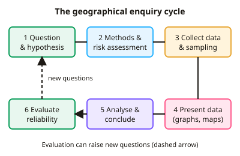

GCSE Geography · Topic 8
Geographical fieldwork and investigations
Geographical fieldwork and investigations is about going outside to collect your own data and answer a real question.
We will plan an enquiry with questions, hypotheses, risk assessments and sampling methods.
Then we collect physical and human data, and present, analyse, conclude on and evaluate our results.
- 4 subtopics
- 277 questions
- Free: 8.1 notes and 10 questions
In this topic
- 8.1The enquiry process: questions, hypotheses, risk assessment, sampling methods and ethical considerationsFree below · 40 questions
- 8.2Physical fieldwork (river or coast): data collection methods such as channel width, depth, velocity, beach profiles and sediment sizeOpen in Full Marks · 86 questions
- 8.3Human fieldwork (urban or rural): land-use surveys, environmental quality surveys, pedestrian and traffic counts and questionnairesOpen in Full Marks · 74 questions
- 8.4Presenting, analysing, concluding on and evaluating fieldwork data, including unfamiliar fieldwork questionsOpen in Full Marks · 77 questions
8.1 · Free notes
The enquiry process: questions, hypotheses, risk assessment, sampling methods and ethical considerations

Key points
- A geographical enquiry follows set stages: enquiry question/aim, hypothesis, methods and risk assessment, data collection, presentation, analysis and conclusion, then evaluation. AQA, OCR and Edexcel all expect you to know a physical enquiry and a human enquiry in different environments.
- A good enquiry question is focused, measurable and place-specific, e.g. 'How does pedestrian flow change with distance from the CBD in this town?'. A hypothesis is a testable prediction, e.g. 'Channel width increases downstream', which the data can support or reject.
- Primary data is collected first-hand (pedestrian counts, velocity readings). Secondary data is collected by others (census data, Ordnance Survey maps, Environment Agency flow data). Quantitative data is numerical; qualitative data is descriptive (field sketches, interview comments, photographs).
- A risk assessment identifies each hazard, the risk (likelihood × severity, e.g. 3 × 4 = 12) and a control measure. Examples: wellies and shallow water for rivers, checking tide times for coasts, working in groups in public places for urban work.
- Sampling is needed because you cannot measure everything. Random sampling (random numbers) reduces bias; systematic sampling uses regular intervals (interval = population ÷ sample size, e.g. 120 ÷ 20 = every 6th house); stratified sampling takes proportional samples from subgroups (e.g. age groups).
- A larger sample size gives more reliable results because anomalies have less effect. Sampling bias occurs when the sample is chosen subjectively (e.g. only approaching friendly-looking people), so it does not represent the whole population.
- Ethical considerations include getting informed consent, explaining the purpose, keeping answers anonymous, not photographing identifiable people without permission, respecting private land, and leaving the environment undamaged (no removing sediment or disturbing wildlife).
- A pilot study is a small trial run to test methods, questions and timings so problems can be fixed before the main data collection.
- Reliability means repeating gives similar results (take three float timings and a mean); accuracy is closeness to the true value (use calibrated equipment); validity means the method measures what the hypothesis tests. An anomaly is a result that does not fit the pattern and should be identified and explained.
- Evaluation judges the methods and conclusion: limitations include one-day data collection, weather, time of day, small samples, equipment error and subjectivity. Improvements are more sites, repeated measurements, different days and more observers.
- In exam answers, link methods to the hypothesis and justify choices in context. For example, 'systematic sampling every 10 m along a transect covers the whole beach without bias'. Always give a reason for sampling, timing and site choice.
In more detail
- Worked hypothesis: "Channel width increases with distance downstream along the river" is clear, measurable and testable.
- Worked sampling: systematic — every 500 m at 8 sites; stratified — sites in each land-use zone of a town; random — using random numbers to place quadrats.
- Worked risk assessment: hazard: fast-flowing water; risk: medium; control: never enter water above knee depth, and always work in pairs.
- Worked sample size: measuring 30 pebbles at each site gives more reliable results than measuring 10.
- Worked ethics: don't photograph identifiable people without permission, and leave every site as you found it.
Practice
The enquiry process: questions, hypotheses, risk assessment, sampling methods and ethical considerations: 10 questions
Pick an answer to check it, or open the answer for the explanation.
1. Which is a testable hypothesis for a river enquiry?
- Why do rivers flow downhill?
- How should rivers be managed?
- Rivers are important to people
- Channel width increases downstream along the River Exe
Show answer
D: Channel width increases downstream along the River Exe. A hypothesis is a testable statement predicting a relationship; data can support or reject it. The others are open questions or opinions.
2. A hazard has a likelihood score of 3 and a severity score of 4. Using risk = likelihood × severity, what is the risk score?
- 7
- 1
- 0.75
- 12
Show answer
D: 12. Risk score = likelihood × severity = 3 × 4 = 12, so this hazard would need a strong control measure.
3. A street has 120 houses and you want a systematic sample of 20. Which sampling interval do you use?
- Every 20th house
- Every 2nd house
- Every 100th house
- Every 6th house
Show answer
D: Every 6th house. Sampling interval = population ÷ sample size = 120 ÷ 20 = 6, so you survey every 6th house.
4. When is stratified sampling most appropriate for a questionnaire?
- When people are chosen using random numbers only
- When you have no idea about the population
- When the population has subgroups, such as age groups, of different sizes
- When you only want the first people you meet
Show answer
C: When the population has subgroups, such as age groups, of different sizes. Stratified sampling takes a sample from each subgroup in proportion to its size, so the sample represents the whole population.
5. Which is an example of secondary data in a human geography enquiry?
- A pedestrian count you carried out
- Your field sketch of a high street
- Census data on housing from the ONS
- An environmental quality survey you scored
Show answer
C: Census data on housing from the ONS. Secondary data is collected by someone else, such as census data published by the Office for National Statistics. The others are first-hand.
6. Which action is an ethical consideration when carrying out a street questionnaire?
- Counting traffic at peak times
- Using a stopwatch for timing
- Wearing waterproof clothing
- Getting consent, explaining the purpose and keeping answers anonymous
Show answer
D: Getting consent, explaining the purpose and keeping answers anonymous. Ethical practice means informed consent, privacy and not harming or misleading people. Waterproofs are a safety measure; the others are methods.
7. Three float timings over 10 m give velocities of 0.42, 0.38 and 0.40 m/s. What is the mean velocity?
- 0.42 m/s
- 1.20 m/s
- 0.38 m/s
- 0.40 m/s
Show answer
D: 0.40 m/s. Mean = (0.42 + 0.38 + 0.40) ÷ 3 = 1.20 ÷ 3 = 0.40 m/s. Repeating and averaging improves reliability.
8. What is an anomaly in fieldwork data?
- A result that does not fit the general pattern
- The mean of all results
- The most common result
- A result taken from secondary data
Show answer
A: A result that does not fit the general pattern. An anomaly is an unusual result that does not fit the trend. You should identify it and suggest reasons, such as measurement error or a local factor.
9. Which is qualitative data?
- A tally of 45 pedestrians
- Velocity of 0.5 m/s
- Pebble length in millimetres
- Interview comments about how safe people feel
Show answer
D: Interview comments about how safe people feel. Qualitative data describes opinions, feelings or appearance, such as interview comments. The others are numerical (quantitative) data.
10. Which is the most suitable control measure for the risk of slipping while measuring a river?
- Use a clinometer
- Wear wellies or sturdy shoes and work in shallow water
- Record the river gradient
- Collect more pebbles
Show answer
B: Wear wellies or sturdy shoes and work in shallow water. A control measure reduces the likelihood or severity of a hazard. Suitable footwear and staying in shallow water reduce the risk of slipping or falling in.
Keep going in Full Marks
Full Marks has 40 questions on The enquiry process: questions, hypotheses, risk assessment, sampling methods and ethical considerations (30 more than here), set out in practice levels. You also get notes and 3D models for all 4 subtopics of Geographical fieldwork and investigations, plus games, timed exams and past papers.